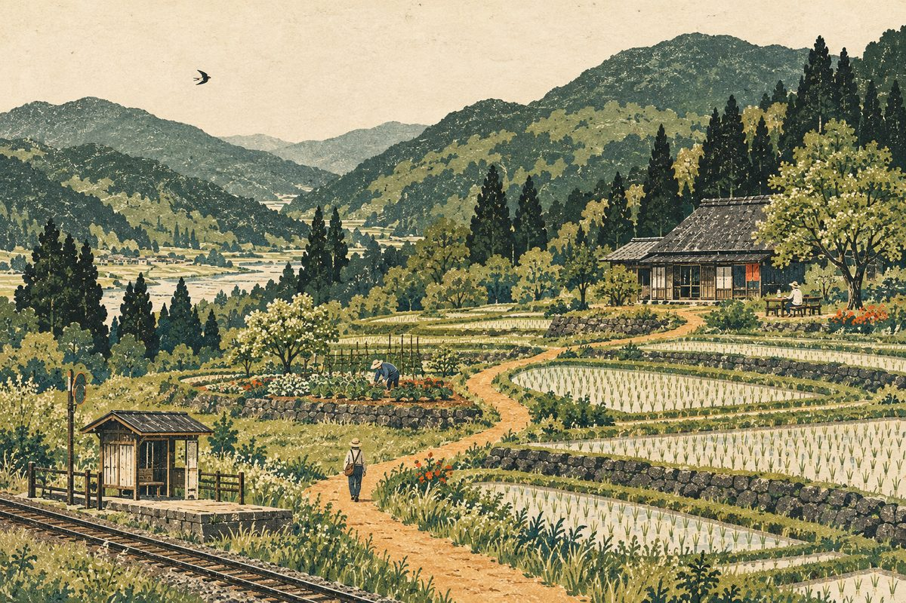

はじめまして、はらいどゆききです。
畑にふれる。
人と出会う。
一緒に、場所を育てる。
和歌山県橋本市・御幸辻の田畑を舞台に、
自然や土地に触れながら、人が集まり、
活動し、学んでいく取り組みです。
畑仕事に参加する。場所づくりを手伝う。
離れたところから活動を支える。
暮らしに合わせて、いろいろな関わり方を考えています。
まずは知るだけでも大丈夫。登録は必要ありません。

一緒に手を動かしながら、
少しずつ関係を育てていく。
大切にしたいのは、自然や土地に触れ、人と一緒に活動すること。畑での作業やそのときの気づきを通して、学びや工夫が生まれる場を目指しています。
今は、活動の土台を一緒につくる初期メンバーも募っています。ただし、全員が運営を担う必要はありません。まず参加してみる、時々手伝うなど、関わり方は変わっていっても大丈夫です。
今、気になることを
選んでみてください。
関心に合わせた案内です。複数読んでも、あとから選び直しても大丈夫です。
育てること、食べることに
興味がある
まず現地の活動を知って、畑仕事に関わる入口を探したい。
案内を見る ↓02 / 一緒につくる始まったばかりの
場所づくりに関わりたい
農業に限らず、自分の得意なことやアイデアを持ち寄りたい。
案内を見る ↓03 / 活動を支える離れたところからも
応援したい
記録を楽しみにしたり、役立つものや知恵を持ち寄ったり。
案内を見る ↓作業の日に、日帰りで参加する。
田植えや稲刈りなど、人手が要る日に声がかかります。朝だけ、夕方だけの参加でも大丈夫です。
こんなことをします
- 田植え・稲刈り・麦刈り・豆の収穫など、季節の大きな作業の日に参加する。
- 草取りや水の通り道を整えるなど、ふだんの手入れを手伝う。
- この秋に麦と豆の種をまき、来年6月ごろに麦の後へ田植えをする予定です。
- 冬のあいだは日帰りが中心です。参加する日は、主催者と相談して決めます。
私たちは、こう呼んでいます一時留学
節目の作業の日だけ、日帰りで現地に来ること。慣れてきたら、定期的に通う関わり方もあります。
場所と活動の立ち上げに、一緒に関わる。
完成された体験に参加するだけでなく、これから何をするか考えるところにも関わりたい。そんな方に向けた案内です。
こんな関わり方を考えています
- 今は、来た人が過ごせる場所を整えているところです。小さなハウスや雨水タンクなどを、みんなで集まる日に作る予定です。
- 農への関心だけでなく、手仕事、アイデア、人とのつながりなど、自分が持ち寄れることから関わる。
- 使っていない机・椅子、テントや寝袋、鎌や鍬などの道具を持ち寄ることも、立派な関わり方です。
- 必要なことや関わる頻度は、主催者と話しながら確かめる。
私たちは、こう呼んでいます初期メンバー
立ち上げの時期に、活動や場所を一緒につくっていく人たち。固定された役職ではなく、すべての参加者が目指す立場でもありません。
現地にいない日も、つながっている。
仕事や暮らしの事情で、今は現地に行くのが難しい。それでも気になる、応援したい。そんな方に向けた案内です。
こんな関わり方を考えています
- 現地から届く便りで、田畑の様子や育っていく過程を知る。
- 活動を誰かに紹介したり、余っている道具や知恵を持ち寄ったりする。
- 行ける時が来たら、作業の日に声がかかります。
- お金での支援の受け入れや条件は、まだ決まっていない部分があります。主催者と相談して決めます。
急がず、話しながら決めていきます。
- 知るこのページや、主催者の案内を読む。
- 手を挙げる「ゆききファン」で、気になる関わり方と連絡先を送る。
- 話す後日、運営から連絡があり、ざっくばらんにお話しします。
- 日程を決める参加する日は、あなたの都合に合わせて相談して決めます。
はじめての方から、
よく聞かれること。
農業の経験がなくても参加できますか？
はい。経験のない方でも少しずつ慣れていけるように、と考えている活動です。作業の日は、主催者や先に関わっている人と一緒に進めます。
毎回参加しないといけませんか？
いいえ。行ける時に来て、行けない時は休んで大丈夫です。無理せず、自分のペースで関わってください。
登録したら、必ず参加や支援をしないといけませんか？
いいえ。「ゆききファン」への登録は、予定や便りを受け取るためのものです。参加や支援を約束するものではありません。
保険はどうなっていますか？
現時点では、各自でご用意いただく形を考えています（医療保険や個人賠償責任保険など）。詳しくは主催者にご確認ください。
どんな服装・持ち物で行けばいいですか？
汚れてもよい服と靴が基本です。日によって作業が変わるので、詳しい持ち物は活動日ごとの案内でお知らせします。
収穫したものはもらえますか？
うまく取れたら、お裾分けをする考えです。ただ、始めたばかりなので、初年度にどれくらい取れるかは正直わかりません。
この場所で、
一緒にやってみる。
はらいどゆききは、和歌山県橋本市・御幸辻の田畑を舞台に、自然や土地に触れながら、一緒に活動する取り組みです。
都会での暮らしを続けながら、ときどき畑へ。手を動かし、季節の変化を見て、気づいたことを持ち寄る。そんな関わりを、少しずつ育てていきたいと考えています。
- 活動場所
- 和歌山県橋本市・御幸辻
- アクセス
- 南海高野線 御幸辻駅から徒歩約3分
大切にしていること
最初から、活動のすべてを理解している必要はありません。まずは様子を知ることから。関わる深さやペースは、人それぞれでよいと考えています。
一緒に作業した経験や、試したこと、迷ったことも記録に残す。その記録が、あとから参加する人の手がかりになればと思っています。
まずは、
知るところから。
関わり方は、あとからいくらでも変えられます。
作業風景や畑の変化も、少しずつ届けていきます。